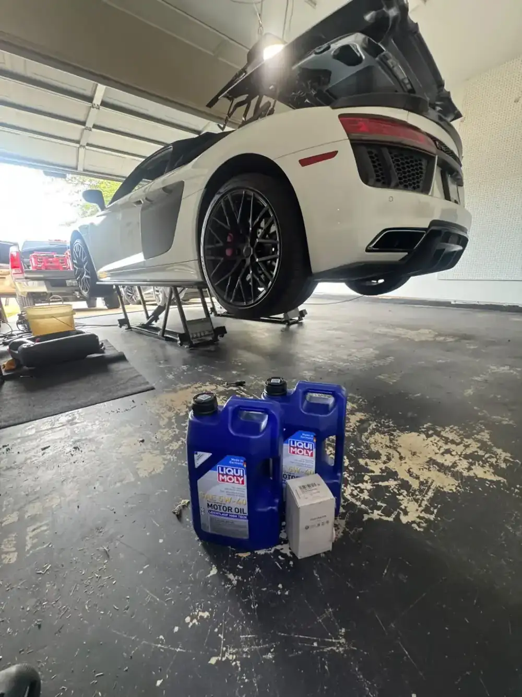
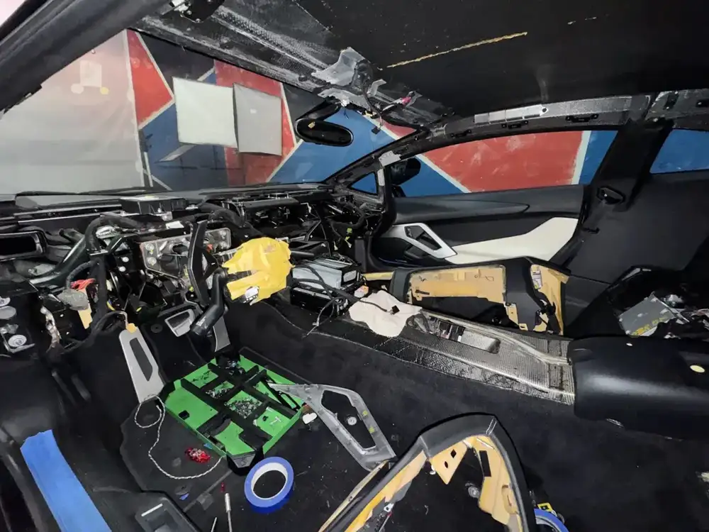
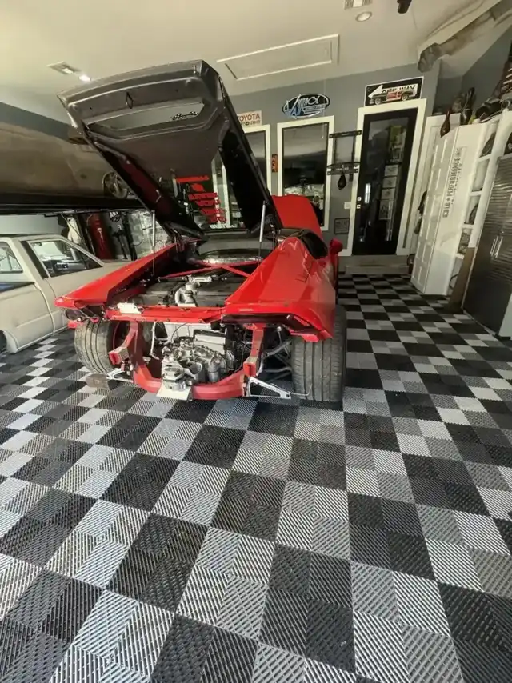

Mobile maintenance
Oil changes, brakes, batteries and inspections, done where the car sits.
- Oil service
- Brake work
- Battery replacement
KAE · Bee Cave
KAE Autowerks serves Bee Cave from Austin.
KAE Autowerks is based in Austin and works with customers from Bee Cave. Call (909) 518-9693 to ask about timing and directions.

Oil changes, brakes, batteries and inspections, done where the car sits.

Warning lights, weird noises, drivability problems. Factory diagnostics, coding and software updates.

Brakes, suspension and drivability tuning for enthusiasts. OEM parts, torqued to spec.
Anthony has done work on our McLaren 570GT and S580… oil change, air filters, wheel work, air conditioning. I have taken the car to him and he has come to my home for some of the work, even delivered the car for me. Def recommend… great guy doing high quality work on exotics. Really appreciate it.
Anthony does exceptional work and is a pleasure to be around. I couldn’t recommend him and his services more. He has worked on both my Audi RS6 and my Porsche Cayenne. I will definitely use him again in the future!
If you own a Lamborghini in Austin, Anthony at KAE is your guy. He's the only person I trust with my Aventador. Finding a top-tier Lamborghini tech here, especially who truly knows the V12 platform, is hard. Anthony is honest, detail-oriented, and efficient. He’s everything a meticulous owner looks for, and that’s why I trust him. That trust was built over weeks of serious work.
What’s better than getting your cars oil changed or service in your own garage? No more dropping off at the dealership for me. Anthony takes care of all of our cars and he’s been about half of the cost.
Anthony helped me multiple times servicing my Audi! Great service and just a great person do to business and talk car. Thanks for taking great care of my cars!!!